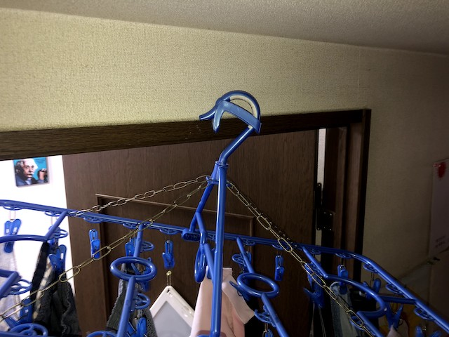
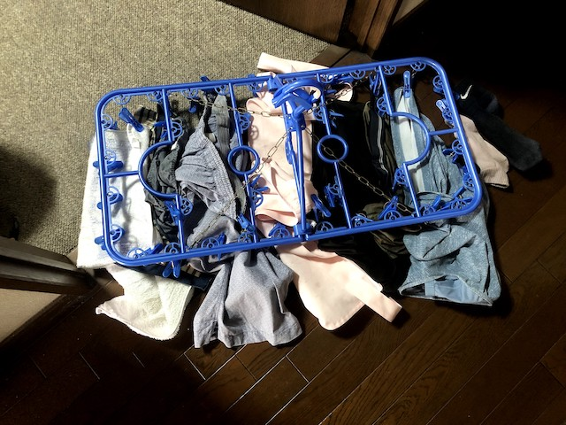
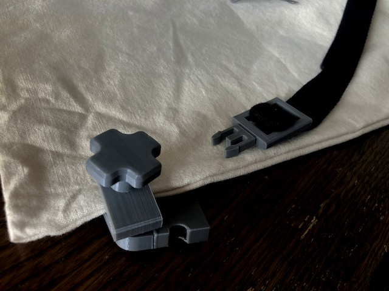
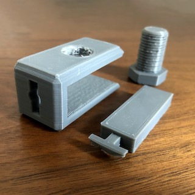

＜製作目的＞
梅雨も明けたというのに雨が降る日が多く、部屋の中に洗濯物を干す機会が増えたが、干すところがない。
自分の家はもちろん、ひとり暮らしをする友人の家、親戚の家も同様にないらしい。
厳密にいうとあるが、安定性がないという声が多かった。

帰宅すると落ちていることが多い。

して、部屋干しの安定性を高めるものを製作する。
＜製作状況＞
10月25日

せっかくなのでどちらかのデータの数値をいじって作ることにする。決して手抜きではないことを、ここでは声を大にして言いたい。